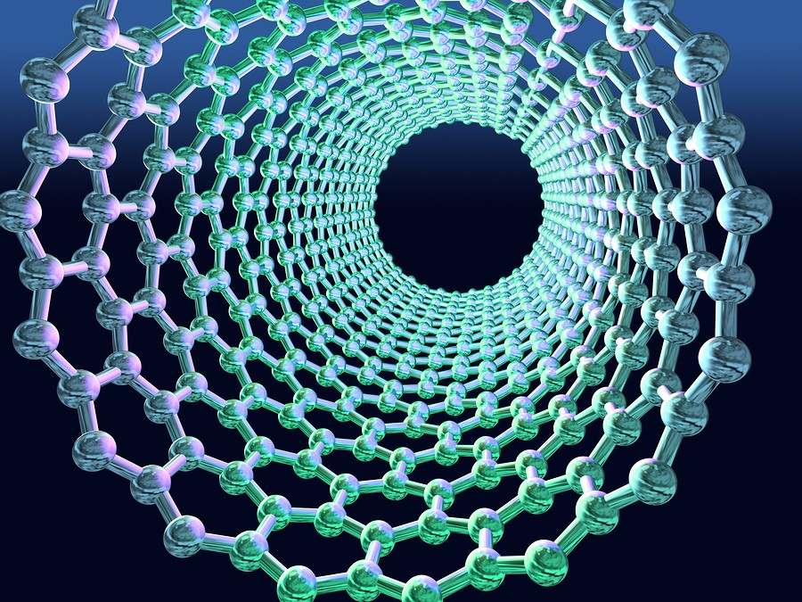

<!doctype html>
<html>
<head>
<meta charset="utf-8">
<title>Untitled Document</title>
</head>

<head>
<link rel="preconnect" href="https://fonts.gstatic.com">
<link href="https://fonts.googleapis.com/css2?family=Chango&display=swap" rel="stylesheet">
<style>


<link rel="preconnect" href="https://fonts.gstatic.com">
<link href="https://fonts.googleapis.com/css2?family=Chango&family=Ranchers&display=swap" rel="stylesheet">
<style>


header {
text-align: center;
}
div {position:static;

text-align: center;
display: block;
}
html {
background-image: url("ozadje.jpg");
background-repeat:repeat-y;
background-size: cover;
}

#penis {
font-style: italic;

}
#quote {
position:static;
bottom: 20%;
}
#slika {
margin-left: 30%;
width: 40%;
}
.kurac {

margin-top: 10%;
text-align: center;

}

#naslov {
color: #2C344E;
font-family: 'Ranchers', cursive;
}

</style>
<meta charset="utf-8">
<title></title>
</head>
</html>
<center><header><h1 id="naslov">Kemijska sestava nanodelcev </h1></header></center>
<strong><p><h3>Nanodelec je definiran kot delec snovi, ki ima premer od približno 1 do 100 nanometrov. S prostim očesom nanodelci niso vidni, vendar je to omogočeno z uporabo elektronskih mikorskopov. Z optičnimi mikroskopi jih ni možno videti.</strong></h3></p> 
<strong><p><h3>Večinoma se uporabljajo vrstični elektronski mikoroskopi, ki jih uporabljajo v večini laboratorijev. Ti omogočajo, da opazovalec vidi nanodelec dovolj dobro, da mu lahko določi kemijsko zgradbo. Obstajajo tudi druge metode raziskovanja nanodelcev, eden od njih je z uporabo tunelskega mikroskopa, ki omogoča tudi opazovanje atomov na površini in premikanje manjših nanodelcev med atomi.</strong></h3></p>
<center></center>
<header></header>

<div class="kurac">
<h3><a href="https://inter4life.github.io/bine_animacija/2.html">Nazaj</a> <a href="https://inter4life.github.io/bine_animacija/2.html">Domov</a> <a href="Spletna stran 2.html">Naprej</a></h3>
</div>

